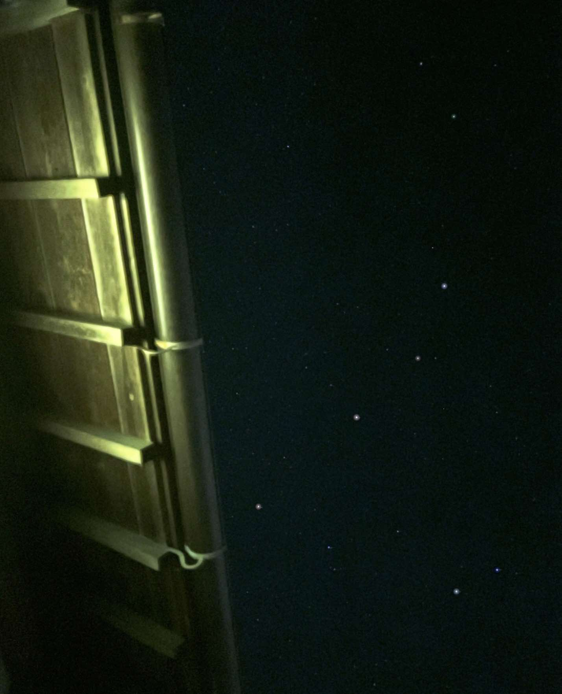

诗词 随笔 生活 【置顶】志追随者  《志追随者》 晚风捎来追随者之信，展于屋檐上的惊醒。 而天星发觉我的凝视，绘出虚廓中的忽明。 浩渺微星竟能感动人；星河人海中，之于我又何尝不然。 ——流星划过眼角，那是改变的轨迹。 背景 卧在屋檐砖瓦上，吹着晚风看着浩瀚星河。 本想感叹我之渺小，却不想收到了私信。 是啊，浩瀚星河中的微星被我所拍摄。 是啊，茫茫人海中的阁主为人所关注。 当我与星反思，原来我们皆有意义。 —— 2024.9.10 23:55